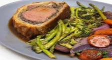
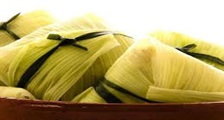

La cocina jujeña es rica en sabores ancestrales, con platos que combinan productos andinos como la papa, el maíz y la quinoa, con influencias de las culturas originarias y la cocina española. Destacan platos como empanadas, tamales, humitas, locro, y la calapurca, entre otros. La gastronomía jujeña también incluye bebidas como la chicha y el api, y el uso de ingredientes locales como el charqui, el cayote y diversas hierbas aromáticas.
La empanada jujeña original es de carne de llama o charqui de llama (carne seca con sal al sol).
ver receta


Se prepara con choclo crudo rallado que se cocina con leche y otros ingredientes.
ver receta